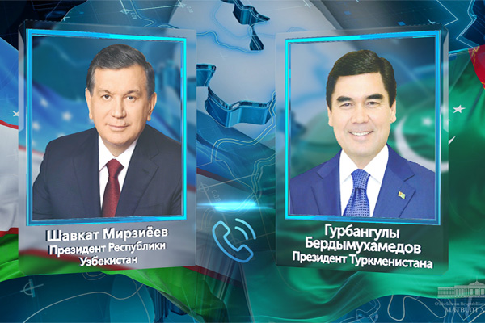
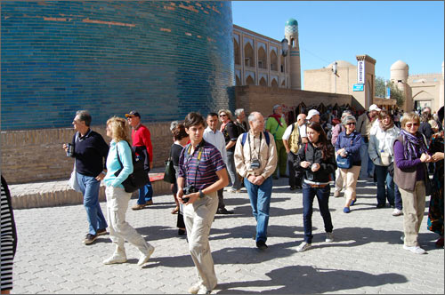
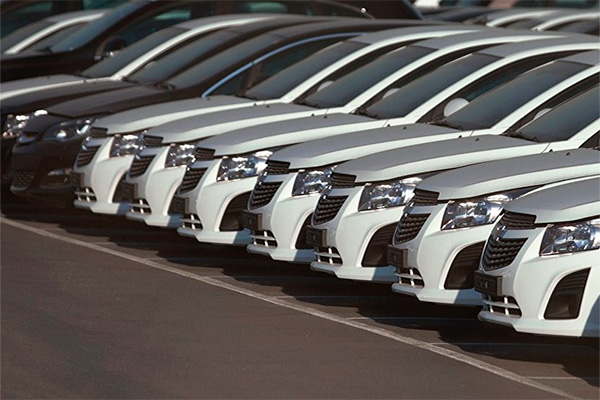
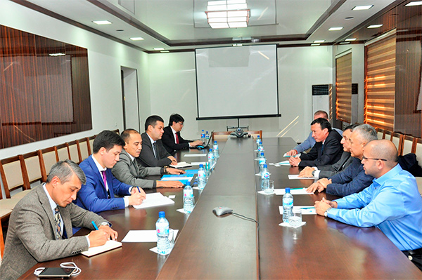

Welcom to Uzbekistan

Presidents of Uzbekistan and Turkmenistan discuss prospects for development of cooperation between the countries
On November 13, President of Uzbekistan Shavkat Mirziyoyev and President of Turkmenistan Gurbanguly Berdymuhamedov held a telephone conversation. During the conversation, the heads of state discussed the state and prospects for development of multifaceted cooperation between two countries in the context of the implementation of agreements at the highest level. It was noted with deep satisfaction that regular meetings and contacts of the leaders of Uzbekistan and Turkmenistan are a reliable foundation for further strengthening bilateral relations of friendship and strategic partnership, expanding practical cooperation in various sectors of the economy. The presidents paid special attention to the issues of building up mutual trade, strengthening cooperation in industry, energy and agriculture, building effective transport corridors, and intensifying interregional and humanitarian exchanges. The parties stated a commonality of approaches and positions on the most important aspects of interaction, including on ensuring regional security and stability, countering contemporary challenges and threats, rational use of water resources, and efficient development of the energy potential. The importance was stressed of continuing close cooperation on a wide range of issues on the bilateral and multilateral agenda, as well as mutual support for promoting initiatives in the international arena and implementing major infrastructure projects in the region. The heads of states reaffirmed their firm commitment to the consistent deepening and strengthening of multifaceted relations based on the principles of centuries-old friendship, good-neighborliness and strategic partnership for the benefit of the fraternal peoples of Uzbekistan and Turkmenistan.

Uzbekistan plans to increase the number of foreign tourists to 9.09 million by 2026
Uzbekistan plans to increase the number of foreign tourists visiting the country to 9.09 million by 2026. A draft presidential resolution on measures to develop tourism in the Republic of Uzbekistan in the period up to 2025 was published on the portal for discussing draft regulatory documents. According to the document, Uzbekistan plans to increase the number of foreign tourists visiting the country from 2.69 million in 2017 to 9.09 million in 2025. According to forecasts of the Government of Uzbekistan, 4.8 million foreign tourists will visit the country in 2018 and 5.89 million foreigners in 2019. he number of domestic tourists is expected to grow from 10.56 million in 2017 to 18.95 million in 2025. This figure in 2018 should reach 14 million, and next year - 14.7 million. At the same time, the export of tourism services in Uzbekistan will increase to US$2.23 billion in 2025 against US$546.9 million in 2017. The export of tourist services in 2018 will be US$951 million and in 2019 - US$1.16 billion. The number of hotels and similar accommodation facilities is projected to grow from 816 units in 2017 to more than 1,600 in 2025, and the number of places in the accommodation facilities from 39,800 to 84,400.Malaysian feature film and TV series to be shot in Uzbekistan
Representatives of “Aquila Emas Sdn Bhd” Malaysian Media Company following a 10-day visit to Uzbekistan signed a Memorandum of Сooperation with Uzbekistan partners. According to the Embassy of Uzbekistan in Malaysia, which organized filmmakers’ delegation visit, the film shooting is scheduled for early 2019. Meetings were held with leadership of the State Committee for Tourism Development, National TV and Radio Company of Uzbekistan, Uzbekfilm JSC, other structures, as well as khokimiyats of Khorezm and Bukhara regions, including leading local TV channels of these regions. During the negotiations, agreements were reached on creation of a joint feature film, shooting of which will be held among picturesque desert and mountain landscapes, ancient cities and unique architectural monuments of Khorezm and Bukhara regions. It is also planned to create a 6-series tourist television program about Uzbekistan’s cultural and historical heritage. The feature film and tourism TV series will be broadcasted on one of the leading Malaysian TV2 channels in prime time. This channel, which has an audience of more than 10 million people, is watched not only in Malaysia, but also in Singapore and Brunei.

Uzbekistan produces 148,300 cars in January-October
Uzbekistan produced 148,300 passenger cars in January-October 2018, which is 31.7% higher compared to the same period of 2017. According to the State Statistics Committee of Uzbekistan, the production of trucks increased by 5.3% in the reporting period - up to 3,370 units. Uzbekistan produced 532 buses in January-October 2018, which is 32.1% less compared to the same period of 2017. The output of automobile engines in Uzbekistan in January-October 2018 amounted to 115,340. The growth compared with January-October 2017 made up 49.2%. In January-October 2018, the output of tractors was 2,710, which is 4.6 times more than in the same period of 2017.
